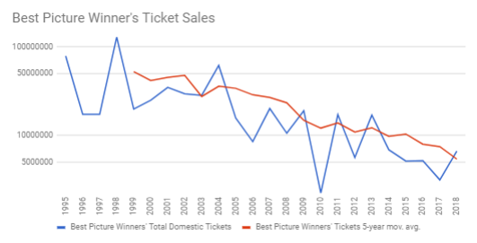
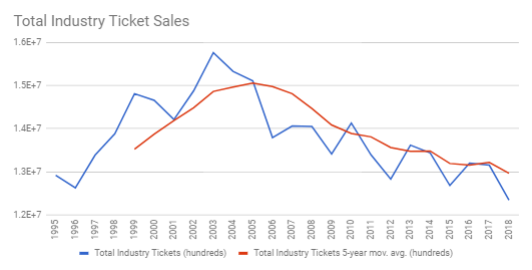
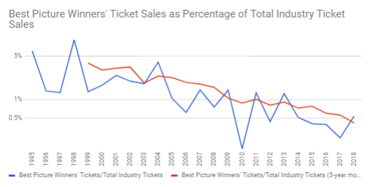

March 14, 2018
Oscar's Best Picture Winners' Ticket Sales vs. Total Industry Ticket Sales
I recently watched a Ben Shapiro video on YouTube in which he opined that the Academy Awards has become more of an opportunity for Hollywood to make political statements than to reward great filmmaking. It is not surprising he is making this statement as this is a common refrain from conservative pundits. However, unlike other pundits, who simply express that opinion with no support, he also sought to back his theory up with some logic about ticket sales.
Specifically, he claimed that one could easily unveil Hollywood's true motivation by looking at ticket sales. He stated that, since 2003, the Best Picture winners were movies "nobody" watched, and then he gave some specific examples of the typical Best Picture winner before and after that year and their box office numbers. I'll admit the ones he selected did seem to paint a picture.
While I generally trust that Shapiro has done his research, I decided to look at the data in a more comprehensive manner to determine whether or not it really did support his assertion that Best Picture winners' ticket sales had declined dramatically relative to total industry ticket sales. Here's what I found...
Best Picture winners' ticket sales have indeed been declining in recent years:
However, so have overall industry ticket sales:
So the real question becomes, how have Best Picture winners fared as a percentage of overall industry ticket sales?
As you can see, overall industry sales, while declining in recent years, have actually stayed fairly flat relative to the much more dramatic decline in Best Picture winners' ticket sales.
Also, please note that this data (from Box Office Mojo) is estimated ticket units sold. Therefore, it is free from any distortions from inflation that would be present in statistics using dollars. Some may also point out that it is now only March 2018, so how can I have 2018 ticket sales? The ticket sales numbers for 2018 are the Best Picture winner from the Academy Awards program aired in 2018 and the industry ticket sales from 2017. Finally, in an effort to keep this as an apples-to-apples comparison and leave the analysis free of any distortions that might result in greater international ticket sales in recent years, my numbers include only domestic ticket sales.
In conclusion, while this data does not confirm the existence of a political bias in Hollywood, it does, in my opinion, confirm that the Academy has increasingly awarded movies that have less popular appeal. This supports the assertion that the Academy is less concerned with what is viewed by wide audiences as entertaining or "great". Thus, it does beg the question: What is Hollywood's criteria for great filmmaking?